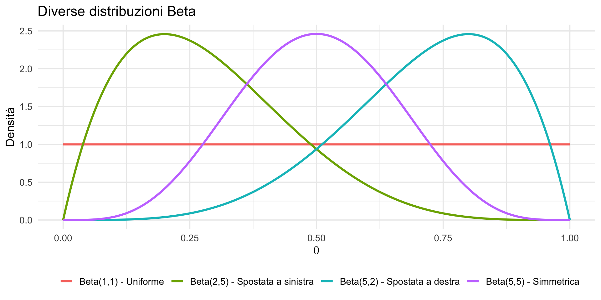
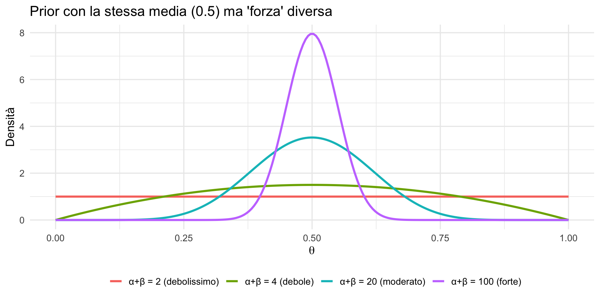
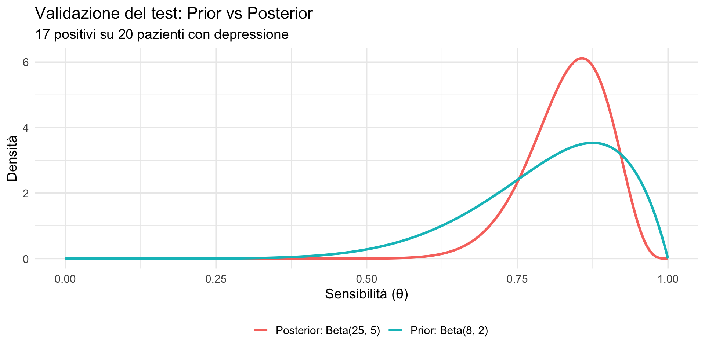
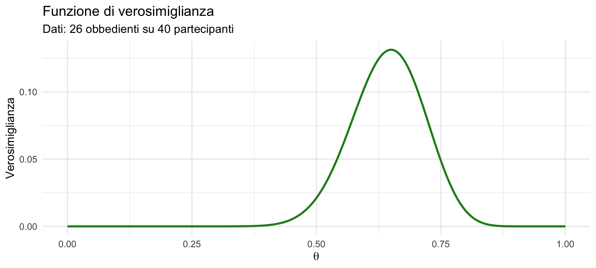
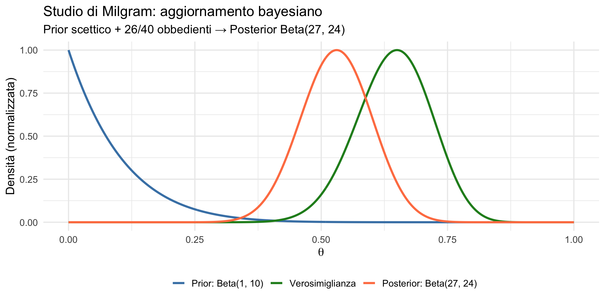
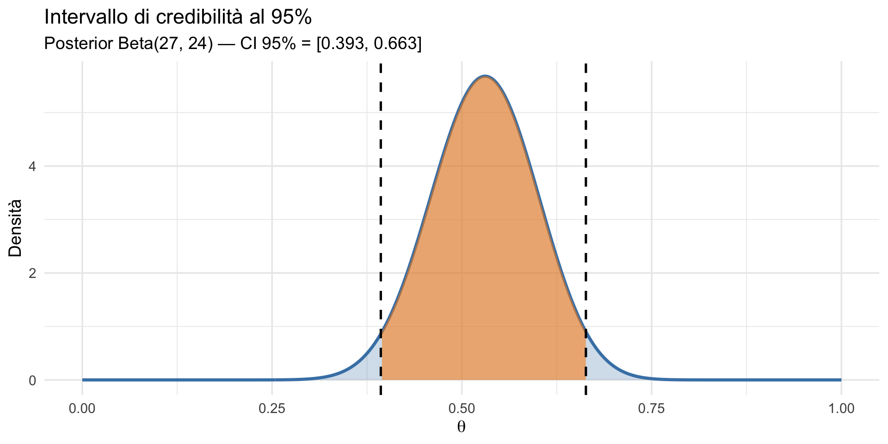

![]()
[1] 0.5625Distribuzioni coniugate
Beta-Binomiale — Segmento 1
29 ottobre 2026
Dagli algoritmi alle scorciatoie
Cosa abbiamo costruito finora
Nelle ultime due lezioni abbiamo esplorato due approcci all’inferenza bayesiana:
Lezione 17: abbiamo iniziato con il calcolo esplicito su un insieme discreto di valori di \(\theta\) (ad esempio 5 punti), utilizzando tabelle, prodotti e normalizzazione. Abbiamo poi esteso il metodo all’approssimazione su griglia (101 punti), gettando le basi per il lavoro con distribuzioni continue.
Lezione 18: abbiamo introdotto l’aggiornamento sequenziale — il posterior di oggi diventa il prior di domani — e abbiamo anticipato un caso particolare di grande utilità: la coppia Beta-Binomiale. In questo contesto, l’aggiornamento si riduce a una semplice somma di conteggi, suggerendo l’esistenza di una struttura più profonda.
Oggi approfondiamo le ragioni per cui questa scorciatoia funziona e ne analizziamo le proprietà formali.
Il concetto fondamentale è quello di famiglia coniugata: si verifica quando la distribuzione a priori (prior) e la funzione di verosimiglianza (likelihood) sono tali che la distribuzione a posteriori (posterior) appartiene alla stessa famiglia della prior. In questo caso, l’inferenza bayesiana si riduce a un semplice aggiornamento dei parametri della distribuzione, senza bisogno di integrazioni numeriche.
Obiettivi
- Capire cos’è una famiglia coniugata e perché è utile.
- Approfondire la coppia Beta-Binomiale.
- Interpretare i parametri della Beta come “dati virtuali”.
- Applicare il modello a problemi psicologici con calcoli a mano.
Parte 1: cos’è una famiglia coniugata?
Il problema computazionale
Abbiamo visto che l’inferenza bayesiana richiede di calcolare:
\[ \text{Posterior} \propto \text{Verosimiglianza} \times \text{Prior}. \]
Nella lezione 17, per passare dalla proporzionalità a una distribuzione di probabilità legittima, abbiamo dovuto normalizzare: dividere per la somma (caso discreto) o per l’integrale (caso continuo). L’approssimazione a griglia funziona bene, ma è un calcolo numerico.
Esistono casi in cui il calcolo è semplice analiticamente?
La soluzione: famiglie coniugate
Una famiglia coniugata è una coppia (prior, likelihood) tale che:
il posterior appartiene alla stessa famiglia del prior.
Se il prior è una Beta, il posterior è ancora una Beta. Se il prior è una Normale, il posterior è ancora una Normale.
L’aggiornamento si riduce ad aggiornare i parametri della distribuzione, senza calcolare integrali.
Perché è importante?
Con una famiglia coniugata:
- non servono integrali — il posterior ha forma nota;
- l’aggiornamento è algebrico — basta aggiornare i parametri;
- interpretazione intuitiva — i parametri hanno un significato chiaro;
- calcoli a mano possibili — utile per capire il meccanismo.
Le famiglie coniugate più comuni
| Likelihood | Prior coniugato | Posterior |
|---|---|---|
| Binomiale | Beta | Beta |
| Normale (media) | Normale | Normale |
| Poisson | Gamma | Gamma |
| Normale (varianza) | Gamma inversa | Gamma inversa |
In questo segmento approfondiamo la coppia Beta-Binomiale; nel prossimo la Normale-Normale.
Parte 2: la distribuzione Beta
Ripasso: cos’è la distribuzione Beta?
La distribuzione Beta(\(\alpha, \beta\)) è una distribuzione continua definita sull’intervallo \([0, 1]\).
È particolarmente adatta a modellare probabilità, tassi e proporzioni, come ad esempio:
- tassi di remissione,
- probabilità di successo,
- frazioni di popolazione.
La funzione di densità
La sua funzione di densità di probabilità è:
\[ p(\theta) = \frac{\theta^{\alpha - 1}(1 - \theta)^{\beta - 1}} {B(\alpha, \beta)}, \] dove:
- \(\alpha > 0\) e \(\beta > 0\) sono i parametri di forma;
- \(B(\alpha, \beta)\) è la costante di normalizzazione che assicura che l’area sotto la curva sia pari a 1.
I parametri \(\alpha\) e \(\beta\)
I parametri controllano la forma della distribuzione:
- \(\alpha\) > \(\beta\): la distribuzione è spostata verso 1 (valori alti più probabili);
- \(\alpha\) < \(\beta\): la distribuzione è spostata verso 0 (valori bassi più probabili);
- \(\alpha\) = \(\beta\): la distribuzione è simmetrica intorno a 0.5;
- \(\alpha\) = \(\beta\) = 1: distribuzione uniforme.
Visualizziamo alcune Beta

Statistiche della Beta
Media: \[ E[\theta] = \frac{\alpha}{\alpha + \beta}. \]
Moda (per \(\alpha\), \(\beta > 1\)): \[ \text{Moda} = \frac{\alpha - 1}{\alpha + \beta - 2}. \]
Varianza: \[ \text{Var}[\theta] = \frac{\alpha \beta}{(\alpha + \beta)^2 (\alpha + \beta + 1)}. \]
Esempio: calcolo della media
Se abbiamo una Beta(9, 7):
\[ E[\theta] = \frac{9}{9 + 7} = \frac{9}{16} = 0.5625 \]
Parte 3: l’interpretazione come “dati virtuali”
L’intuizione fondamentale
I parametri della distribuzione Beta hanno un’interpretazione estremamente intuitiva. Si possono leggere come conteggi “virtuali”:
\(\boldsymbol{\alpha}\) - 1 = “successi virtuali” osservati in passato;
\(\boldsymbol{\beta}\) - 1 = “insuccessi virtuali” osservati in passato.
In altre parole, il prior incapsula la nostra conoscenza pregressa come se derivasse da osservazioni già effettuate, anche se non fanno parte dei dati attuali.
Questa interpretazione rende naturale l’aggiornamento bayesiano: ogni nuovo dato reale si somma semplicemente ai “dati virtuali” del prior.
Esempio concreto
Beta(1, 1): \(\alpha - 1 = 0\), \(\beta - 1 = 0\) → Nessuna informazione pregressa (prior uniforme).
Beta(6, 6): \(\alpha - 1 = 5\), \(\beta - 1 = 5\) → Come se avessimo già visto 5 successi e 5 insuccessi.
Beta(11, 3): \(\alpha - 1 = 10\), \(\beta - 1 = 2\) → Come se avessimo già visto 10 successi e 2 insuccessi.
La “forza” del prior
La quantità \(\boldsymbol{\alpha + \beta}\) misura la forza (o precisione) del prior.
In termini intuitivi, indica quanto peso diamo alla conoscenza pregressa rispetto ai nuovi dati:
- \(\boldsymbol{\alpha + \beta}\) piccolo (es. 2) → prior debole: bastano pochi dati osservati per modificarlo sensibilmente.
- \(\boldsymbol{\alpha + \beta}\) grande (es. 100) → prior forte: sono necessari molti dati per spostare in modo apprezzabile le credenze iniziali.
Un modo efficace per pensarci è questo:
\(\alpha + \beta\) corrisponde al numero di osservazioni “virtuali” incorporate nel prior.
Questo spiega anche il principio che abbiamo visto nella Lezione 17: con abbastanza dati reali, le osservazioni virtuali del prior diventano trascurabili — e il posterior converge al valore vero.
Visualizziamo la “forza” del prior

Parte 4: l’aggiornamento Beta-Binomiale
La regola di aggiornamento
Se osserviamo \(k\) successi su \(n\) prove, l’aggiornamento bayesiano con un prior Beta è:
\[ \boxed{ \text{Prior: } \mathrm{Beta}(\alpha, \beta) \;\;\longrightarrow\;\; \text{Posterior: } \mathrm{Beta}(\alpha + k,\; \beta + n - k) } \]
L’aggiornamento si riduce a una somma. I successi osservati si sommano a \(\alpha\), gli insuccessi osservati si sommano a \(\beta\). Questa proprietà rende la distribuzione Beta coniugata alla Binomiale.
Perché funziona?
Dimostrazione (in breve):
\[ \begin{aligned} p(\theta \mid k, n) &\propto \underbrace{\theta^k (1-\theta)^{n-k}}_{\text{Verosimiglianza}} \times \underbrace{\theta^{\alpha-1} (1-\theta)^{\beta-1}}_{\text{Prior}}\\[8pt] &= \theta^{(\alpha + k) - 1} (1-\theta)^{(\beta + n - k) - 1} \end{aligned} \] che è esattamente il nucleo di una distribuzione \(\boldsymbol{\text{Beta}(\alpha + k, \beta + n - k)}\).
La costante di normalizzazione è automaticamente \(B(\alpha + k, \beta + n - k)\) — non dobbiamo calcolare nessun integrale.
Esempio: validazione di un test
Uno psicologo vuole stimare la sensibilità di un test di screening per la depressione.
Prior: sulla base della letteratura, assume una Beta(8, 2), corrispondente a una sensibilità attesa di circa 80%.
Dati: su 20 pazienti con depressione, 17 risultano positivi.
Obiettivo: calcolare il posterior.
Soluzione
Prior: Beta(8, 2).
- Media prior: \(8/(8+2) = 0.80\).
- “Dati virtuali”: 7 successi e 1 insuccesso.
Dati osservati: \(k = 17\) successi, \(n - k = 3\) insuccessi.
Posterior: \[ \mathrm{Beta}(8 + 17,\; 2 + 3) = \mathrm{Beta}(25, 5). \]
Verifichiamo con R
Posterior: Beta( 25 , 5 )Media posterior: 0.833Visualizziamo l’aggiornamento

Interpretazione
Prima dei dati: ci aspettavamo sensibilità ~80% (prior Beta(8,2)).
Dopo i dati: la stima sale a ~83% (posterior Beta(25,5)).
I dati (17/20 = 85%) erano coerenti con il prior. Il posterior è un compromesso, più preciso (curva più stretta).
Parte 5: lo studio di Milgram (1963)
L’obbedienza all’autorità
Lo studio di Milgram rappresenta una pietra miliare della psicologia sociale per l’analisi dei meccanismi di obbedienza all’autorità.
Ai partecipanti veniva chiesto di somministrare scosse elettriche di intensità crescente (che credevano reali) a un’altra persona. Il livello massimo dello strumento era contrassegnato come: “Pericolo: scossa grave”.
I dati sperimentali
- Numero totale di partecipanti: \(n = 40\).
- Partecipanti che hanno obbedito fino al livello massimo: \(k = 26\).
- Proporzione osservata: \(\hat{\theta} = \frac{26}{40} = 0.65\).
Domanda statistica:
qual è la proporzione \(\theta\) della popolazione generale che mostrerebbe un’obbedienza estrema in condizioni simili?
Il modello statistico
Assumiamo: \[ X \mid \theta \sim \text{Binomiale}(n=40, \theta) \] e utilizziamo un approccio bayesiano per quantificare l’incertezza su \(\theta\).
Specificazione del prior: scetticismo iniziale
Prima di osservare i dati, esprimiamo scetticismo sulla diffusione dell’obbedienza estrema:
\[ \theta \sim \text{Beta}(1, 10). \]
Media a priori: \(\frac{1}{11} \approx 0.091\). Interpretazione in termini di dati virtuali: 0 successi e 9 insuccessi — crediamo che pochissimi obbedirebbero.
La verosimiglianza

Aggiornamento bayesiano
La regola di aggiornamento coniugato Beta-Binomiale:
\[ \text{Beta}(1 + 26,\; 10 + 14) = \text{Beta}(27, 24). \]
Media a posteriori: \(\frac{27}{51} \approx 0.529\). Il dato empirico riduce fortemente lo scetticismo iniziale.
I tre ingredienti

Inferenza probabilistica
L’approccio bayesiano consente affermazioni dirette:
\[ P(\theta > 0.5 \mid \text{dati}) \approx 0.664. \]
C’è quindi una probabilità di circa 66% che la maggioranza della popolazione mostri obbedienza estrema in condizioni analoghe.
Intervallo di credibilità
Intervallo di credibilità al 95%:
Con probabilità 95%, la vera proporzione di obbedienza estrema nella popolazione è compresa tra circa 39% e 67%.
Intervallo di credibilità
Questa affermazione è esattamente ciò che il ricercatore vorrebbe dire — e che l’intervallo di confidenza frequentista non permetteva di affermare.
Ricordate la lezione 14: l’IC frequentista descrive una proprietà della procedura, non del parametro.
L’intervallo di credibilità bayesiano, invece, è una probabilità diretta su \(\theta\).

Replicabilità dei risultati
Questi risultati sono stati replicati in modo indipendente da diversi gruppi, utilizzando metodologie diverse. Una conferma recente è fornita da Grzyb et al. (2025).
Messaggi chiave
Il modello Beta-Binomiale è ideale per stimare proporzioni.
Il prior formalizza credenze iniziali (anche scettiche).
I dati possono modificare profondamente tali credenze.
L’inferenza bayesiana quantifica l’incertezza, produce affermazioni probabilistiche interpretabili, e integra teoria ed evidenza empirica.
Riepilogo
Famiglia coniugata: prior e posterior della stessa forma.
Beta-Binomiale: prior Beta + dati binomiali → Posterior Beta.
Parametri come dati virtuali: \(\alpha\) - 1 successi, \(\beta\) - 1 insuccessi.
Aggiornamento semplice: aggiungere i successi ad \(\alpha\), gli insuccessi a \(\beta\).
Intervallo di credibilità: interpretabile direttamente come probabilità sul parametro — a differenza dell’IC frequentista.
Per il prossimo segmento
Vedremo la seconda famiglia coniugata fondamentale: Normale-Normale.
Applicazione: stima della media di variabili continue (punteggi di test, tempi di reazione, misure psicofisiologiche).
Il principio è lo stesso — il posterior è un compromesso tra prior e dati — ma la “valuta” dell’aggiornamento non sono più conteggi, bensì precisioni.